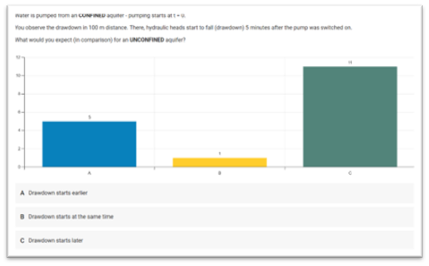
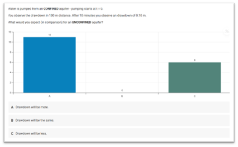

Example-Basic Hydrology
30 December 2025; v1.0
Thomas Reimann¹, Rudolf Liedl¹, Markus Giese², Roland Barthel²,
Edith Grießer³, Steffen Birk³, Oriol Bertran⁴, Daniel Fernàndez-Garcia⁴
¹ TU Dresden, Institute for Groundwater Management
² University of Gothenburg, Department of Earth Sciences
³ University of Graz, Department of Earth Sciences, NAWI Graz Geocenter
⁴ Polytechnical University of Catalonia, Department of Civil and Environmental Engineering
Disclaimer
This document represents a static snapshot of the iNUX Best Practice Examples for Implementation in Education at the time of publication.The most recent online version is available at the gw-inux GitHub repository:
https://github.com/gw-inux/iNUX-Handbook/tree/main/Best_Practice
Content
- Purpose and Scope
- Best Practice Example – Aquifer Response on Water Abstraction
- Acknowledgment
- References
Purpose and Scope
Goal of the report
To document how interactive digital tools were implemented in hydrogeology education (Basic Hydrogeology), using concrete examples that illustrate transferable best practices. The focus is on didactic integration, practical effort, and lessons learned, rather than on technical details of the tools themselves.
Target audience
University teachers, course coordinators, and educational developers interested in adopting interactive tools in lectures, exercises, or complete courses.
Best practice examples for Basic Hydrogeology
The example presented in this report represent a selected subset of best practices and is intended to illustrate typical use cases and transferable practices. A more comprehensive and continuously updated collection of interactive tools, documentation, and accompanying resources is available online via the project’s web platform under:
https://github.com/gw-inux/iNUX-Handbook/tree/main/Best_Practice
Best Practice Example – Aquifer Response on Water Abstraction
This example presents a best-practice implementation of an interactive visualization in an undergraduate hydrogeology course, aimed at improving conceptual understanding of pumping-induced drawdown in confined and unconfined aquifers.
1. Short Description of the Interactive Educational Tool
The interactive tool Flow2Well_transient_confined_unconfined.py (available in the iNUX interactive materials with index 03-05-008 and online under https://flow2well-transient-unconfined-confined.streamlit.app/) visualizes transient groundwater flow to a pumping well under confined and unconfined aquifer conditions. Based on the Theis solution, it allows direct, side-by-side comparison of drawdown evolution by interactively changing pumping rate and aquifer parameters (Figure 1). The tool is designed for live education in lectures and classroom settings. Immediate visual feedback on parameter changes supports intuitive understanding of key differences in aquifer response without requiring prior modeling experience.

Figure 1: The interactive Streamlit app with the radial distribution of drawdown in response to water abstraction.
2. Context and educational setting
The interactive tool was implemented in the undergraduate course GV2002 Hydrology and Hydrogeology at the University of Gothenburg in autumn 2024. The course addresses fundamental hydrological and hydrogeological concepts and is attended by students from the Earth Sciences Department (Geology). Students typically have a background in Earth sciences with a stronger emphasis on geological interpretation than on advanced mathematics or physics, and therefore benefit from a qualitative, concept-driven approach to hydrogeological processes.
The application was used during a regular classroom lecture as a live, instructor-guided visualization. The primary role of the app was conceptual illustration, not numerical problem solving. The tool complemented traditional slides and board explanations and was not used as a standalone self-learning resource. The class size was moderate, with around 20 students (a typical undergraduate cohort), allowing for short, informal, interactive exchanges between the instructor and students.
3. Learning objective(s)
Conceptual understanding
- Explain the fundamental conceptual differences between confined and unconfined aquifers, particularly with respect to storage mechanisms and their influence on transient drawdown behavior.
Process interpretation
- Interpret how groundwater drawdown develops in space and time in response to pumping and describe how this evolution differs between confined and unconfined aquifers.
Parameter sensitivity and comparison
- Identify the key parameters controlling drawdown (e.g. transmissivity, storage coefficient or storativity) and explain how changes in storage properties can make confined and unconfined aquifer responses more comparable, thereby clarifying their conceptual relationship.
4. Tool integration and didactic design
The interactive tool was implemented during a classroom lecture within a teaching unit on hydrogeological properties of rocks, soils, and geological formations. At this stage of the course, students were familiar with key aquifer properties such as transmissivity and storativity, but had not yet been formally introduced to flow-to-well concepts.
The teaching sequence started with a short classroom assessment that activated prior knowledge and elicited students’ initial understanding (Figure 2). Questions addressed hydrogeological properties (including transmissivity and storativity) and asked students to qualitatively predict how drawdown propagates from a pumping well over space and time.
a)

b)

Figure 2: Two questions from the classroom assessment with the answers, reflecting the students’ initial understanding.
Following this assessment, the interactive tool was introduced and briefly explained. The instructor outlined the conceptual setup (central pumping well, adjustable abstraction rate, and aquifer properties) and demonstrated how drawdown evolves in both confined and unconfined aquifers. The live interaction with the tool lasted approximately 10–15 minutes and was fully instructor-guided. Students were encouraged to follow the instructions with their own devices, which was possible due to the platform-independent tool that was provided through the Streamlit SharedCloud.
During the demonstration, particular emphasis was placed on comparing confined and unconfined responses under otherwise identical conditions. Because transmissivity was kept constant in both cases, the observed differences in drawdown behavior could be clearly attributed to storage properties. Through guided discussion, students identified that the much smaller storativity of confined aquifers is the key reason for the differing system responses.
To deepen this insight, the storativity of the unconfined aquifer (represented by specific yield) was systematically reduced. Students observed that, as storativity decreased, the unconfined aquifer response increasingly resembled that of a confined system, accompanied by a reduction in drawdown. This interactive exploration provided a concrete conceptual bridge between aquifer type, parameter range, and system behavior.
The session concluded with conventional lecture slides that formalized the concepts of storage properties and storativity, explicitly linking the theoretical explanations to the observations made during the interactive demonstration.
5. Implementation effort and technical setup
The required technical infrastructure for this implementation was minimal. The interactive tool is publicly available via Streamlit Cloud and can be accessed through a standard web browser without installation or login.
Classroom assessment questions can be implemented using common audience response systems (e.g., Partici.fi) or asked directly in class as verbal questions. Preparation effort was low and mainly consisted of adding a single slide containing QR codes linking to the classroom assessment and to the Streamlit application.
Once prepared, the approach is highly reusable. The same didactic structure can be applied to related topics such as flow-to-well concepts or pumping test interpretation with little or no modification.
The required instructor expertise is intermediate. While the tool itself is easy to operate, the interactive setting may trigger follow-up questions from students that require a solid conceptual understanding of groundwater flow and storage processes.
6. Observed outcomes and feedback
During the classroom implementation, students followed the demonstration attentively, with some additionally exploring the tool on their own devices. The interactive adjustment of storage parameters allowed a direct visual comparison between confined and unconfined aquifer responses, making differences in system behavior easy to illustrate.
The time-dependent evolution of drawdown could be demonstrated effectively using the time slider, supporting discussion of how drawdown propagates during ongoing pumping. This aspect is often difficult to convey using static figures alone.
After the lecture, students asked follow-up questions both in class and afterwards through email. In one case, a student explicitly noted that the interactive visualization supported their understanding of the conceptual differences between confined and unconfined aquifers.
7. Lessons learned and recommendations
- The implementation required little technical effort and could be integrated into an existing lecture with minimal preparation.
- Despite the low technical threshold, the interactive demonstration required additional classroom time, making it necessary to shorten or streamline other explanations.
- In this example, the subsequent theoretical discussion of storage and storage properties could be reduced, as key concepts had already been introduced effectively through the interactive visualization.
- The didactic approach is easily transferable to other courses and topics, particularly those addressing flow-to-well processes or pumping test interpretation.
- For first-time adopters, this example represents a concise and manageable entry point for gaining experience with interactive tools in classroom teaching.
Acknowledgment
This document was created within the ERASMUS+ project iNUX.

This project is co-funded by the European Union. However, the views and opinions expressed are solely those of the author(s) and do not necessarily reflect those of the European Union or the National Agency DAAD. Neither the European Union nor the granting authority can be held responsible for them.
References
Reimann, T., Liedl, R., Giese, M., Barthel, R., Grießer, E., Birk, S., Bertran, O., Fernàndez-Garcia, D. (2025). Electronic Questions and Assessments in iNUX: Foundations, Design Principles, and Implementation Workflows.
https://github.com/gw-inux/iNUX-Handbook/tree/main/Digital_Questions
Reimann, T., , Giese, M., Barthel, R., Birk, S., Fernàndez-Garcia, D. (2025). Concept for Categorization of Hydrogeology and Groundwater Management Contents.
https://github.com/gw-inux/iNUX-Handbook/tree/main/Categorization